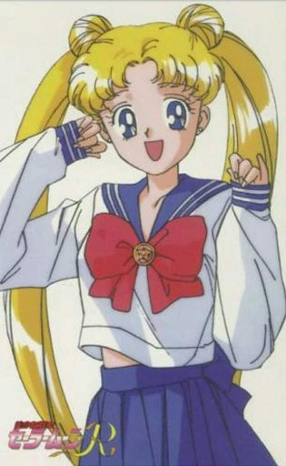

<- Повернутися на головну сторінку
<- Красуня воїн Сейлор Мун
<- Сейлор воїтельки
Усагі Цукіно

Головна інформація
| Імена |
Усагі Цукіно, Сейлор Мун, Принцеса Сереніті, Неокоролева Сереніті, Супер Сейлор Мун, Мессія |
| Японське ім'я |
月野うさぎ |
| Заняття |
Сейлор воїтелька, школярка, принцеса(в минулому житті), королева(в майбутньому) |
| Друзі |
Нару Осака , Луна , Амі Міцуно , Рей Хіно , Макото Кіно , Мінако Айно |
| Союзники |
Сейлори |
| Перша поява |
1 серія |
Особистість:
У першій серії, на початку дівчинка показана незрілою та непунктуальною, плаксивою, але дуже доброю, з бажанням бачити у супротивниках хороше. Усагі ніколи та нікого не залишить в біді, не зациклюється на минулих образах та невдачах. Вона часто здається дурнуватою, але насправді достатньо легковажна. У екстремальних ситуаціях стає уважною та розсудливою. На протязі історії поступово стає відповідальнішою та сильнішою, щоб протистояти більш сильним ворогам.
Cім'я:
Усагі живе разом з мамою Ікуко Цукіно , татом Кенджі Цукіно та молодшим братом Шінго Цукіно . В дорослому віці вийде заміж за Мамору Шіба та у них народиться одна донечка - Чібіуса .
Відносини з окремими персонажами:
Нару - шкільна подруга Усагі. До четвертого сезону включно головна героїня дружила з нею, хоча й почала проводити більше вільного часу з сейлор воїтельками. У п'ятому сезоні не фігурувала.
Уміно - однокласник Усагі, що був деякий час у неї закоханий. Наша героїня на початку не сильно хотіла з ним спілкуватися, вважаючи нав'язливим та дурним, але пізніше спілкуються як знайомі. З часом Уміно закохався у Нару.
Мамору - коханий хлопець Усагі. На протязі більшої частини першого сезону вони стикалися у вільний після уроків час біля ігрового центру, і Мамору не впускав ані шансу подражнити дівчинку різкою критикою. Постійно допмагав Сейлор Мун в образі Такседо Маска. На початку другого сезону ігнорував Усагі, втративши пам'ять; у другій половині отримував страшні видіння від себе самого з майбутнього. Прийняв рішення покинути дівчину за для її безпеки, але незабаром повернувся. У третьому сезоні між ними були рівномірні відносини, а в четвертому сезоні він знову розривав романтичні стосунки, уподобавши більш зрілу дівчину, але знову ненадовго. У п'ятому сезоні полетів навчатися до Америки, перед цим зробивши пропозицію руки і серця Усагі. Під час польту літак розбивається через атаку Галаксії, і вона забирає зоряне сім'я Мамору. На прикінці історії повертає свій облік та цілує Усагі.
Чібіуса - донька в майбутньому. Вона любить маму, але Усагі з минулого сприймає більш як сестру, постійно дражнить. Усагі таке зовсім не подобається. Вони часто сваряться між собою через усілякі дурниці. У другому сезоні, бажаючи врятувати батьків та Землю, відправляється у минуле за срібним кристалом, і провокує підозри щодо себе. У третьому сезоні повертається більш дорослою, з особистим талісманом сейлора. У четвертому сезоні отримує справжню силу та допомагає Сейлор Мун через магічний дзвіночок. У п'ятому сезоні повертається додому.
Майбутнє:
Наша героїня буде боротися за справедливість аж до другого льодовикового періоду, спровокованого невідомим ворогом. Після довгої боротьби зі злом, Супер Сейлор Мун зможе подолати крижаного монстра і буде коронована як Нова Королева Сереніті разом з Королем Ендіміоном. У двадцять років народить маленьку принцесу - Юну Леді Усагі Сереніті. Срібний кристал здаватиметься непотрібним, адже світ став майже утопією. Однак під час атаки Немезиди вона не знайде у залі Срібний кристал, і буде тяжко пораненою, і впаде в анабіоз, обросте кристалом... Після перемоги юної Сейлор Мун на Зеслі майбутнього пануватиме істинна утопія
Галерея